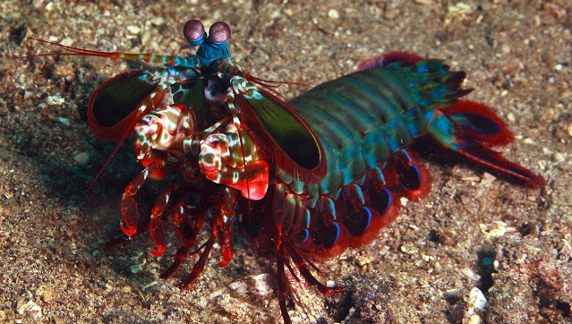

Fatos sobre o Stomatopoda
Camarões Mantis são conhecidos por suas patas poderosas, que eles usam para socar ou esfaquear sua presa. Além de seu método de caça feroz, mantis camarões também são conhecidos por seu extraordinário sentido da visão.
Será que este camarão é mantis?
Apesar do nome o camarão mantis é um animal marinho que não é nem mantis nem camarão, mas um parente próximo de caranguejos e lagostas.
| Stomatopoda | |
|---|---|
| Nomes comuns | tamarutacas / lacraias-do-mar |
| Nome científico | Odontodactylus scyllarus |
| Reino | Animalia |
| Filo | Arthropoda |
| Subfilo | Crustacea |
| Classe | Malacostraca |
| Subclasse | Hoplocarida |
| Ordem | Stomatopoda |
One punch-Mantis

Elas possuem duas patas superpoderosas na parte dianteira que, quando acionadas, são capazes de proferir um golpe com a mesma aceleração de um disparo de uma arma do calibre 22, e podem chegar a 80 km/h. Essas patinhas se movem tão depressa que a água próxima a elas chega a ferver — em um fenômeno chamado supercavitação —, além de provocar uma onda de choque capaz de matar a presa mesmo que a lagosta maldita erre o golpe. Assim, com esse movimento ninja, as tamarutacas assassinam outros animais, despedaçando os coitados, mesmo que contem com carapaças protetoras.
Aliás, tipicamente os aquários não mantêm espécimes de mantis entre os seus animais, já que graças aos seus hábitos violentos e sanguinários, eles não curtem dividir o espaço com outros bichinhos, massacrando seus vizinhos. Além disso, devido ao seu golpezinho ninja de nada, a lagosta-boxeadora é capaz de destruir os vidros dos tanques.
12 receptores? Pra quê???

A maioria das pessoas presume que o camarão mantis deve ser realmente boas em ver uma ampla gama de cores - uma “ bomba termonuclear de luz e beleza ”, como disse o Oatmeal, devido seus 12 a 16 fotorreceptores diferentes em sua banda média. Mas no ano passado, Hanna Thoen da Universidade de Queensland descobriu que eles são muito piores em discriminar entre as cores que a maioria dos outros animais
Eles parecem usar seus mais de uma dúzia de receptores para reconhecer cores de uma maneira única que é muito diferente de outros animais, mas estranhamente semelhante a alguns satélites.Está em estudo uma hipótese que eles precisam de olhos rápidos para complementar seus braços rápidos. E eles têm apenas um cérebro pequeno. “Um camarão mantis tem apenas uma fração de nosso poder de processamento cortical, mas lida com 4 vezes mais entrada”, diz Nicholas Roberts, da Universidade de Bristol. “O sistema de processamento não comparativo que eles desenvolveram representa uma nova solução para aumentar a aquisição de dados, minimizando qualquer sobrecarga de processamento downstream.”